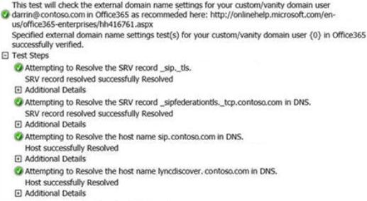

|
<< Click to Display Table of Contents >> Navigation: Knowledgebase and FAQ > DNS Entries for LYNC |
Lync requires 4 DNS entries to work correctly.
There are 2 CNAME and 2 SRV records.
CNAME Record1 CNAME Record2
Type CNAME CNAME
TTL 1 Hour 1 Hour
Name sip.yourdomain.com.au lyncdiscover.yourdomain.com.au
Target sipdir.online.lync.com webdir.online.lync.com
SRV Record1 SRV Record2
Type SRV SRV
Service _sip _sipfederationtls
Protocol _tls _tcp
Port 443 5061
Weight 1 1
Priority 100 100
TTL 1 Hour 1 Hour
Name yourdomain.com.au yourdomain.com.au
Target sipdir.online.lync.com sipfed.online.lync.com
Please note that the service and protocol entries are combined so they will need to be added as _sip._tls.yourdomain.com.au. and _sipfederationtls._tcp.yourdomain.com.au.
Go to the Lync Connectivity Analyzer and select Office 365 Custom/Vanity Domain Name Settings Test for Lync. Enter the sign-in address that you're using when you to try to sign in to Lync Online (for example, darrin@contoso.com), and start the test.
This test examines all four DNS records that are required by Lync Online to determine whether they're correctly configured.

If any issues are detected, check the DNS configuration with your domain registrar. For instructions about how to configure DNS for the most common DNS providers, go to the following Microsoft Office 365 website: Create DNS records when Office 365 doesn’t host your DNS
Some DNS hosts can't host SRV records, or the DNS hosts don't have options to host SRV records. This condition blocks the ability to communicate with external users (Federated and PIC). In these cases, there is currently no workaround except to change DNS hosts.
SRV records are a little more complicated than other DNS records.
Some providers do not allow the creation of SRV via their web portal (Cpanel currently doesn't).
Most providers can edit the zone files manually, but this may mean that you cannot use the web-portal afterwards.